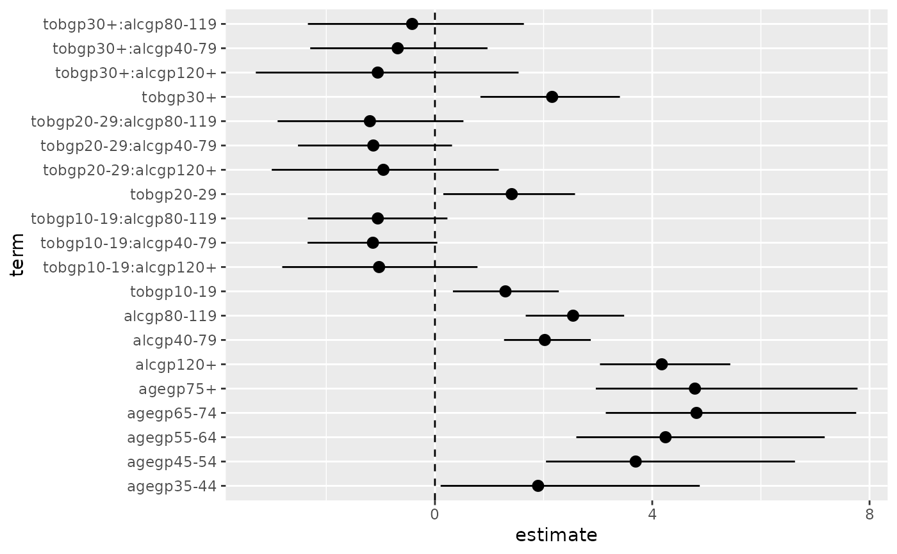
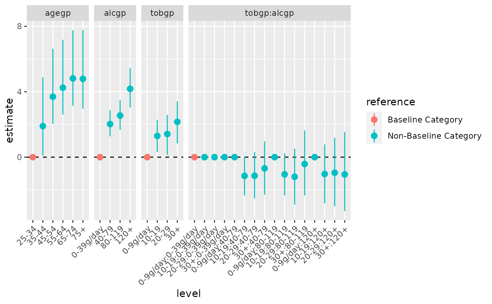

R/tidy_categorical.R
tidy_categorical.RdCreate additional columns in a tidy model output (such as broom::tidy.lm()) to allow for easier control when plotting categorical parameter estimates.
tidy_categorical( d = NULL, m = NULL, include_reference = TRUE, reference_label = "Baseline Category", non_reference_label = paste0("Non-", reference_label), exponentiate = FALSE, n_level = FALSE )
| d | A data frame tibble::tibble() output from broom::tidy.lm(); with one row for each term in the regression, including column |
|---|---|
| m | A model object, created using a function such as lm() |
| include_reference | Logical indicating to include additional rows in output for reference categories, obtained from dummy.coef(). Defaults to |
| reference_label | Character string. When used will create an additional column in output with labels to indicate if terms correspond to reference categories. |
| non_reference_label | Character string. When |
| exponentiate | Logical indicating whether or not the results in broom::tidy.lm() are exponentiated. Defaults to |
| n_level | Logical indicating whether or not to include a column |
Expanded tibble::tibble() from the version passed to d including additional columns:
The name of the variable that the regression term belongs to.
The level of the categorical variable that the regression term belongs to. Will be an the term name for numeric variables.
The type of term (main or interaction)
The type of term (reference or non-reference) with label passed from reference_label. If reference_label is set NULL will not be created.
The the number of observations per category. If n_level is set NULL (default) will not be created.
Guy J. Abel
#> #>#> #> #>#> #> #>library(broom) m0 <- esoph %>% mutate_if(is.factor, ~factor(., ordered = FALSE)) %>% glm(cbind(ncases, ncontrols) ~ agegp + tobgp * alcgp, data = ., family = binomial()) # tidy tidy(m0)#> # A tibble: 21 × 5 #> term estimate std.error statistic p.value #> <chr> <dbl> <dbl> <dbl> <dbl> #> 1 (Intercept) -7.27 1.11 -6.57 5.15e-11 #> 2 agegp35-44 1.90 1.11 1.72 8.62e- 2 #> 3 agegp45-54 3.70 1.06 3.48 5.06e- 4 #> 4 agegp55-64 4.25 1.06 4.00 6.25e- 5 #> 5 agegp65-74 4.81 1.07 4.50 6.83e- 6 #> 6 agegp75+ 4.79 1.12 4.26 2.00e- 5 #> 7 tobgp10-19 1.30 0.491 2.65 8.16e- 3 #> 8 tobgp20-29 1.41 0.606 2.33 1.98e- 2 #> 9 tobgp30+ 2.16 0.644 3.35 8.06e- 4 #> 10 alcgp40-79 2.02 0.403 5.02 5.18e- 7 #> # … with 11 more rows# add further columns to tidy output to help manage categorical variables m0 %>% tidy() %>% tidy_categorical(m = m0, include_reference = FALSE)#> # A tibble: 21 × 8 #> term estimate std.error statistic p.value variable level effect #> <chr> <dbl> <dbl> <dbl> <dbl> <chr> <fct> <chr> #> 1 (Intercept) -7.27 1.11 -6.57 5.15e-11 (Intercept) (Interc… main #> 2 agegp35-44 1.90 1.11 1.72 8.62e- 2 agegp 35-44 main #> 3 agegp45-54 3.70 1.06 3.48 5.06e- 4 agegp 45-54 main #> 4 agegp55-64 4.25 1.06 4.00 6.25e- 5 agegp 55-64 main #> 5 agegp65-74 4.81 1.07 4.50 6.83e- 6 agegp 65-74 main #> 6 agegp75+ 4.79 1.12 4.26 2.00e- 5 agegp 75+ main #> 7 tobgp10-19 1.30 0.491 2.65 8.16e- 3 tobgp 10-19 main #> 8 tobgp20-29 1.41 0.606 2.33 1.98e- 2 tobgp 20-29 main #> 9 tobgp30+ 2.16 0.644 3.35 8.06e- 4 tobgp 30+ main #> 10 alcgp40-79 2.02 0.403 5.02 5.18e- 7 alcgp 40-79 main #> # … with 11 more rows# include reference categories and column to indicate the additional terms m0 %>% tidy() %>% tidy_categorical(m = m0)#> # A tibble: 31 × 9 #> term estimate std.error statistic p.value variable level effect reference #> <chr> <dbl> <dbl> <dbl> <dbl> <chr> <fct> <chr> <chr> #> 1 (Intercept) -7.27 1.11 -6.57 5.15e-11 (Interc… (Int… main Non-Base… #> 2 NA 0 0 0 0 agegp 25-34 main Baseline… #> 3 agegp35-44 1.90 1.11 1.72 8.62e- 2 agegp 35-44 main Non-Base… #> 4 agegp45-54 3.70 1.06 3.48 5.06e- 4 agegp 45-54 main Non-Base… #> 5 agegp55-64 4.25 1.06 4.00 6.25e- 5 agegp 55-64 main Non-Base… #> 6 agegp65-74 4.81 1.07 4.50 6.83e- 6 agegp 65-74 main Non-Base… #> 7 agegp75+ 4.79 1.12 4.26 2.00e- 5 agegp 75+ main Non-Base… #> 8 NA 0 0 0 0 tobgp 0-9g… main Baseline… #> 9 tobgp10-19 1.30 0.491 2.65 8.16e- 3 tobgp 10-19 main Non-Base… #> 10 tobgp20-29 1.41 0.606 2.33 1.98e- 2 tobgp 20-29 main Non-Base… #> # … with 21 more rows# coefficient plots d0 <- m0 %>% tidy(conf.int = TRUE) %>% tidy_categorical(m = m0) %>% # drop the intercept term slice(-1) d0#> # A tibble: 30 × 11 #> term estimate std.error statistic p.value conf.low conf.high variable level #> <chr> <dbl> <dbl> <dbl> <dbl> <dbl> <dbl> <chr> <fct> #> 1 NA 0 0 0 0 0 0 agegp 25-34 #> 2 agegp… 1.90 1.11 1.72 8.62e-2 0.105 4.87 agegp 35-44 #> 3 agegp… 3.70 1.06 3.48 5.06e-4 2.04 6.63 agegp 45-54 #> 4 agegp… 4.25 1.06 4.00 6.25e-5 2.60 7.17 agegp 55-64 #> 5 agegp… 4.81 1.07 4.50 6.83e-6 3.14 7.75 agegp 65-74 #> 6 agegp… 4.79 1.12 4.26 2.00e-5 2.96 7.78 agegp 75+ #> 7 NA 0 0 0 0 0 0 tobgp 0-9g… #> 8 tobgp… 1.30 0.491 2.65 8.16e-3 0.331 2.28 tobgp 10-19 #> 9 tobgp… 1.41 0.606 2.33 1.98e-2 0.154 2.58 tobgp 20-29 #> 10 tobgp… 2.16 0.644 3.35 8.06e-4 0.837 3.40 tobgp 30+ #> # … with 20 more rows, and 2 more variables: effect <chr>, reference <chr># typical coefficient plot library(ggplot2) library(tidyr) ggplot(data = d0 %>% drop_na(), mapping = aes(x = term, y = estimate, ymin = conf.low, ymax = conf.high)) + coord_flip() + geom_hline(yintercept = 0, linetype = "dashed") + geom_pointrange()# enhanced coefficient plot using additional columns from tidy_categorical and ggforce::facet_row() library(ggforce) ggplot(data = d0, mapping = aes(x = level, colour = reference, y = estimate, ymin = conf.low, ymax = conf.high)) + facet_row(facets = vars(variable), scales = "free_x", space = "free") + geom_hline(yintercept = 0, linetype = "dashed") + geom_pointrange() + theme(axis.text.x = element_text(angle = 45, hjust = 1))